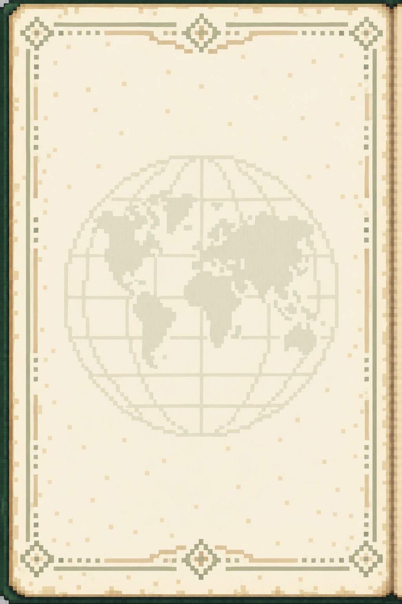
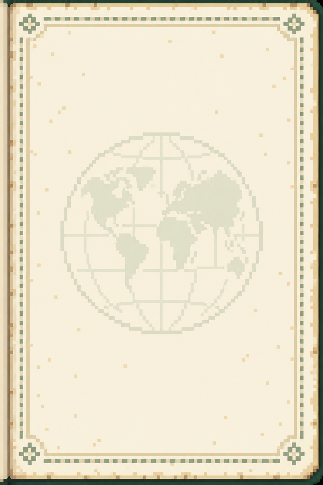

Passport artwork
Back to the mapA little passport, ready for adventure.
Six pixel poses open the cover and add a gold sparkle. Move away to close it.
Download the sprite sheet
Pages for your collection
Ivory paper, faint security patterns, and room for every dish.

